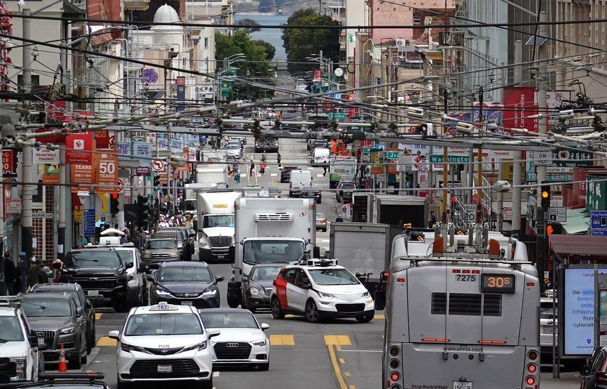

California PUC Hearing On Waymo/Cruise Emergency Safety Is Back On AgainLast week, I reported that the California PUC had called Waymo and Cruise into a hearing July 31 to answer questions of the sort the city of San Francisco has been asking about various problems, particularly interactions with emergency vehicles. Later, the PUC announced the demand had been withdrawn, but now it’s back, for a new hearing on Aug 7 with a much shorter list of questions. The new set of questions still asks about “unexpected stops” but it’s likely they actually mean to ask about “stalls” where the vehicle sits unmoving for at least 20 seconds, not the short stops that are very common when these early generation vehicles feel a wave of caution. There are several reports of robotaxi vehicles coming to a halt when they are confused by a situation, and then waiting for minutes, sometimes for rescue by a physical driver who comes to drive the vehicle away. These stalls and other long pauses have blocked the road and sometimes made it difficult for emergency vehicles to pass, or they have happened at emergency scenes. The CPUC will be asking just how often that is happening. As before the questions focus on first responder interactions and training, covered in the prior article. They also allow the companies to offer what they will do to fix any problems. Not on the docket, but it should be, are questions on any data about how often human drivers have problems blocking traffic or how they interfere with emergency vehicles. I have inquired to SF Muni on what information they will have to compare with any of the data they are asking for and have yet to receive a response. It is important that self-driving vehicles not be expected to be perfect on any of these matters. During pilot phases, they should probably even expect to be a bit worse on non-safety matters where things are merely delayed, as the very purpose they are on the roads is to discover problems and fix them. Let’s hope we see data on this along with the data on statistics for the robotaxis. Here are the questions expected to be asked in the hearing: - How many times has a Cruise or Waymo driverless AV come to an unexpected stop in San Francisco? - What were the reasons for a Cruise or Waymo driverless AV to come to an unexpected stop in San Francisco? - Describe how remote operators interact with AVs in emergency situations, including actions remote operators are able to use to provide navigation aid to vehicles to move vehicles to locations that do not block traffic. If remote operators do not take control of the vehicle and perform the dynamic driving task in these situations, please describe why not, including technical and liability issues associated with remote control of AVs - How many of the Cruise or Waymo driverless AV unexpected stops have impeded a San Francisco first responder from executing their duties, if any? - How were these unexpected stopped driverless AV situations resolved and how long did they take to be resolved? - Describe the testing protocol used by Cruise or Waymo to test that its AVs recognize an emergency situation. - How many times, if any, has Cruise or Waymo conducted training sessions for San Francisco first responders in dealing with unexpected stopped driverless Avs? - How many San Francisco first responders, if any, has Cruise or Waymo trained in dealing with unexpected stopped driverless AVs? - How long does each training last? - Does Cruise or Waymo update its training materials for first responders, and if so, how often? - How many training sessions, if any, does Cruise or Waymo have planned in the future? - How do first responders learn about the Cruise or Waymo training regarding dealing with unexpected stopped driverless Avs? Some additional questions also reference the planned expansion by Waymo into Los Angeles - The Commission has heard from first responders that from their perspective the Passenger Safety Plans (PSPs) filed by the AV companies have gaps when dealing with emergency and catastrophic situations. For first responders, please describe specific gaps in AV companies’ Passenger Safety Plans with regard to protecting passengers and the public during emergency situations. - How quickly do first responders need to be able to communicate with AVs in such emergency and catastrophic situations? - For Cruise and Waymo, please respond to the comments that we’ve received from first responders on this issue. - To the parties, please suggest solutions that can be implemented to address identified gaps in the PSPs. - The Los Angeles Department of Transportation has recommended in comments that AV companies in the city of Los Angeles use the Mobility Data Specification now required for scooters and soon to be required for taxi cabs to immediately communicate to AV companies real-time and fluid traffic data such as special events and road closures. Are tools like this an option for enhancing safety and improving the ability of AV passenger services to identify safety hazards to protect passengers? |
 |